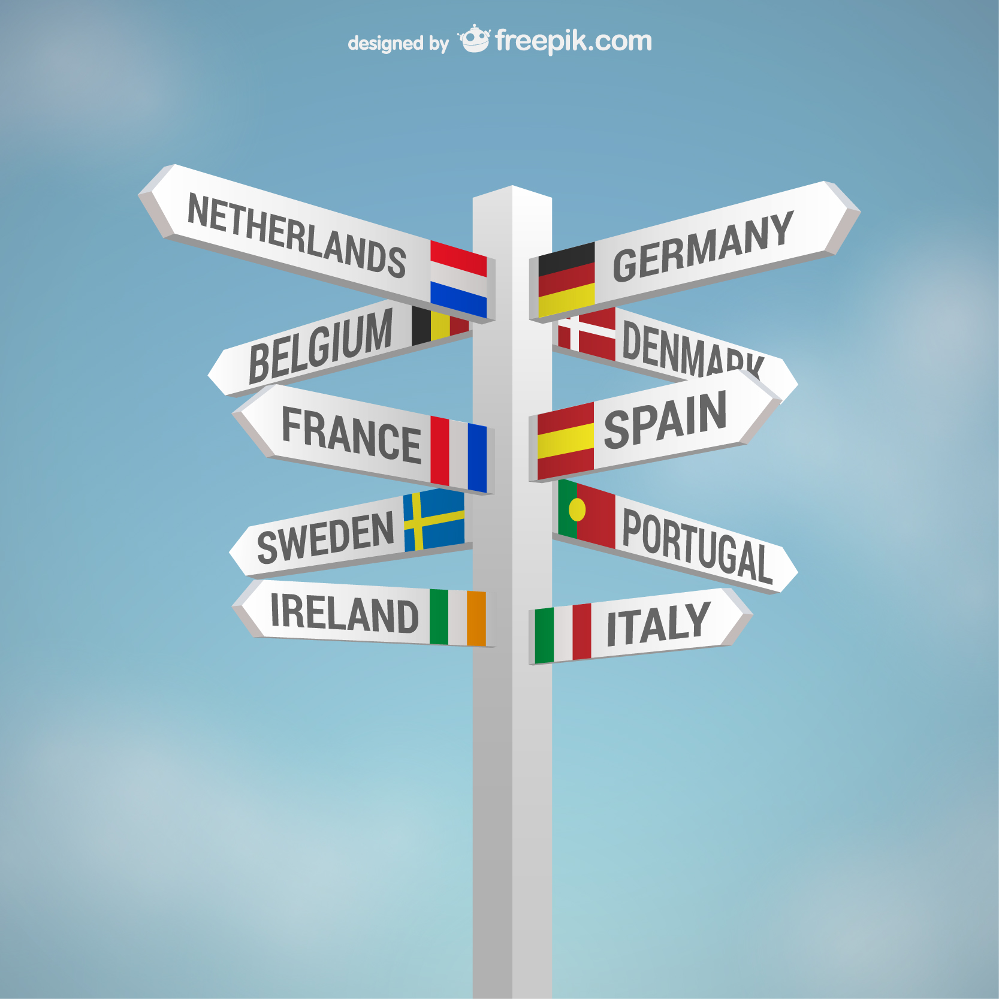

Esta situación de aprendizaje, titulada “Exploramos el mundo: investigación y presentación de un país”, está dirigida al alumnado de 1º de ESO en el área de Geografía e Historia.
El proyecto tiene como finalidad que el alumnado se acerque al conocimiento de la diversidad geográfica del planeta mediante el estudio de un país elegido por ellos mismos. A través de un proceso de investigación guiada, el alumnado trabajará aspectos fundamentales como la localización geográfica, el relieve, el clima, la población, la economía y la cultura.
La propuesta se desarrolla mediante una metodología activa, en la que el alumnado adopta un papel protagonista en su propio aprendizaje. El trabajo se realizará en parejas, favoreciendo la cooperación, el intercambio de ideas y el desarrollo de habilidades sociales.
A lo largo del proyecto, el alumnado utilizará herramientas digitales sencillas para buscar información, organizarla y presentarla de forma clara y estructurada. Se fomentará especialmente el uso responsable de internet, la selección de información fiable y la correcta comunicación de los contenidos.
Como resultado final, el alumnado elaborará una presentación digital y realizará una exposición oral en clase, en la que deberá explicar de forma clara y ordenada las características del país investigado.
Con esta situación de aprendizaje se pretende no solo adquirir conocimientos geográficos básicos, sino también desarrollar competencias clave como la competencia digital, la comunicación lingüística y el aprendizaje autónomo.